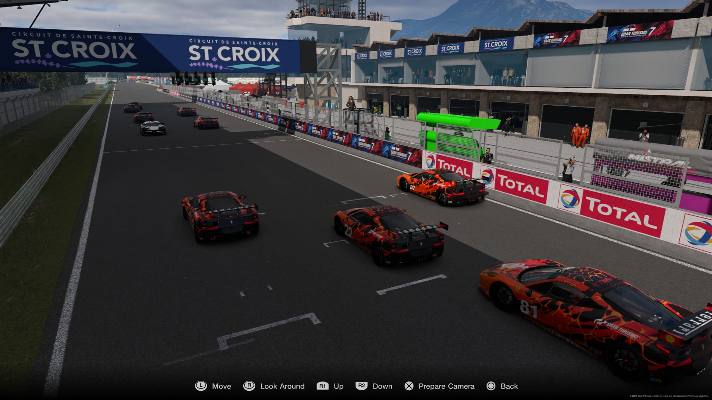
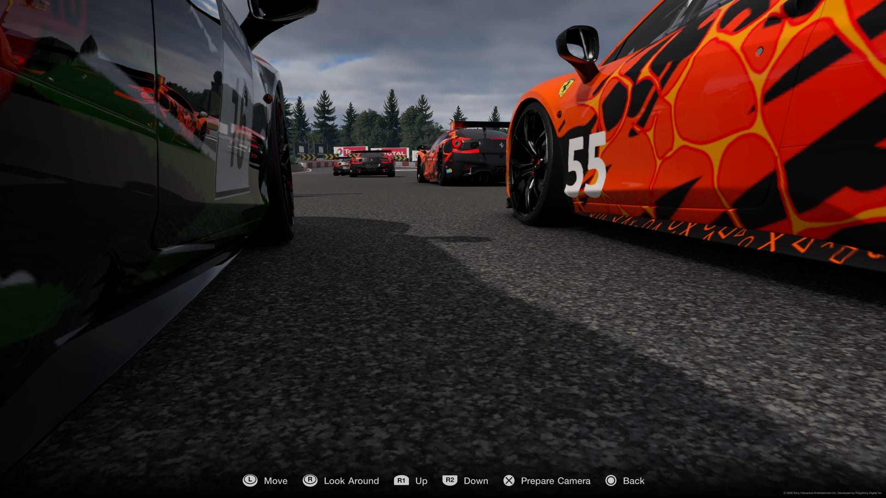
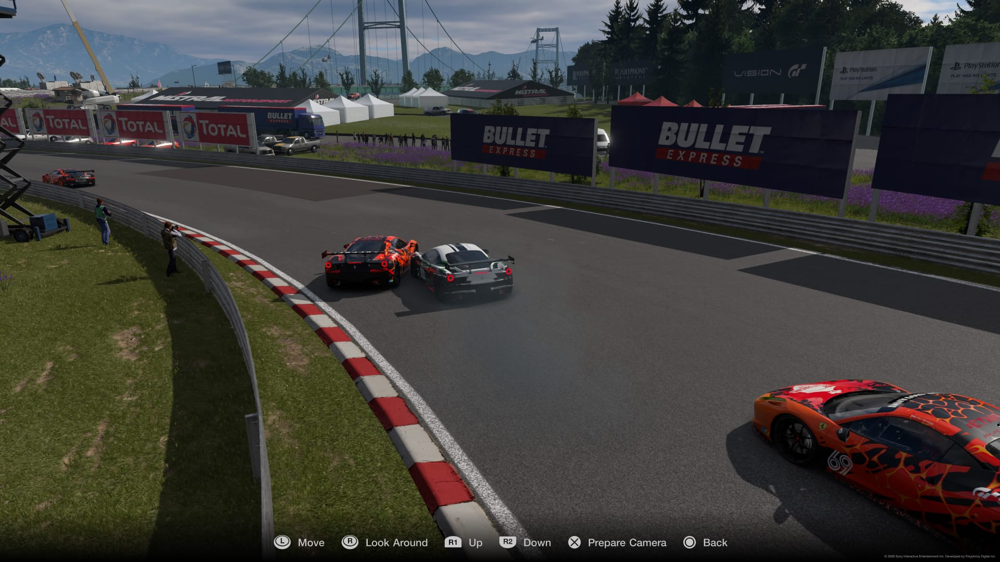
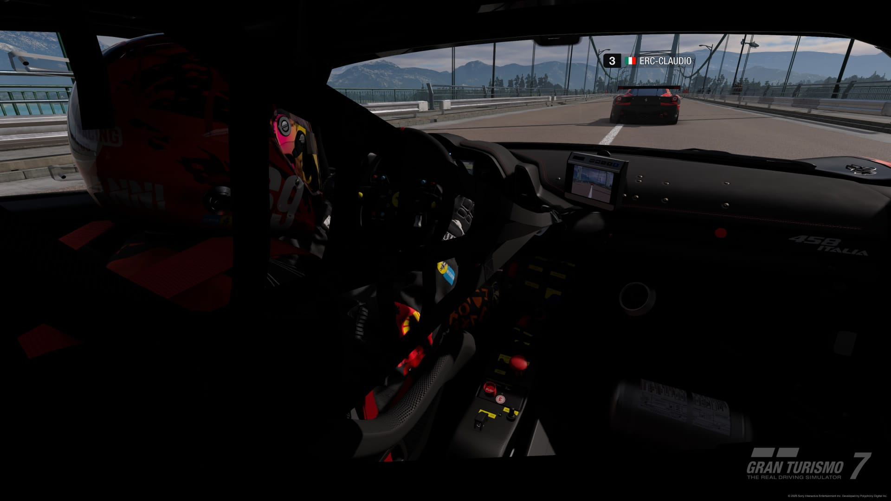
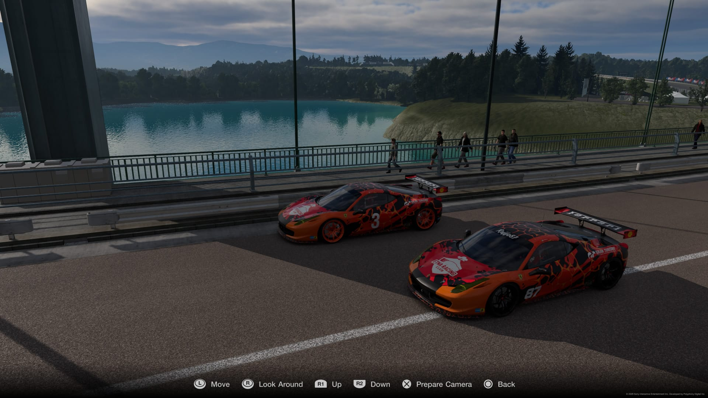
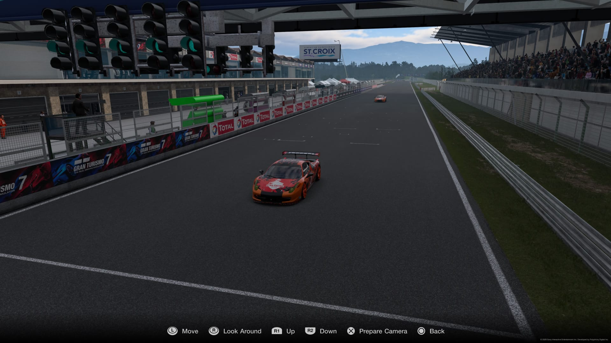

Si è da poco concluso l evento delle Gr 4 nella pista di Sainte Croix, 10 ottimi piloti si sono dati battaglia sin dalle qualifiche dando vita ad una giornata di motorsport di altissimo livello
Il meteo non era dei migliori, era un misto di sole e nuvole ma con prevalenza di quest’ultime, questo però non ha impedito ai piloti di lottare sin da subito per le migliori posizioni
Alla fine della qualifiche a prevalere è stato Carmine che si è messo davanti Giovanni di appena un decimo, alle loro spalle si sono posizionati Stefano Pierpaolo e Claudio con distacchi già più marcati, hanno chiuso la griglia Antonio, Daniele, Fabio, William e Spinotto che causa problemi tecnici alla vettura ha dovuto saltare le qualifiche partendo in ultima posizione
La gara è partita con qualche contatto nelle prime curve, dove ad esempio Antonio ha toccato leggermente Stefano facendolo andare fuori pista (incidente che a fine gara è costato 10” di penalità ad Antonio), le diverse strategie di gara hanno mischiato le carte sin da subito, se infatti chi ha montato sin da subito le Medie (Pierpaolo, Giovanni e Spinotto) hanno optato per un primo stint più lungo sfruttando il traffico gli altri hanno invece preferito partire più aggressivi montando subito le Morbide
Abbiamo visto una gara molto accesa e combattuta fino alla fine, e ad uscirne vincitore con un sorpasso all ultimo giro è stato Pierpaolo seguito da Carmine (giunto ad un solo secondo), Giovanni, Stefano, Claudio, Antonio, Spinotto, Daniele, Fabio e William cha ha chiuso doppiato per diversi problemi all’elettronica
E’ arrivato adesso il momento però di sentire le sensazioni post gara dei protagonisti..
Antonio ci ha fatto sapere che la sua gara è stata molto difficile sin dalle prime curve perché ha purtroppo pizzicato Stefano assumendosi ovviamente tutta la colpa per l accaduto, si è reso conto nelle qualifiche che i suoi tempi non erano al livello dei primi, è stato però soddisfatto della sua strategia e per il fatto di aver fatto pochissimi errori anche se ovviamente l incidente del primo giro ha precluso anche a lui di arrivare più in alto a fine gara, questa per lui è una nota positiva considerando che ha ripreso da poco a correre
Carmine ci ha espresso la sua soddisfazione per il risultato, anche se non totale visto che sperava di fare meglio ma avendo potuto provare poco non gli era ancora chiaro quanto potessero durare le Morbide, si è complimentato per la competitività raggiunta da Pierpaolo ma si è anche lamentato delle distrazioni vocali che si sentono durante la gara senza però accampare scuse sul suo risultato, infine si augura di essere competitivo anche nella prossima gara di domani
Daniele ci ha parlato di come fosse decisamente più contento rispetto agli ultimi allenamenti per questa gara, per i suoi standard è riuscito a fare meglio anche se purtroppo negli ultimi 3 giri si è girato due volte perdendo parecchio tempo, senza quegli errori e la penalità in uscita dal box si sentiva avrebbe potuto fare di più ma è contento lo stesso. Per lui è stato tutto piacevole e divertente
Quando abbiamo chiesto qualche parola a Stefano abbiamo visto un po’ di rammarico nei suoi occhi, per lui è stata una gara sfortunata, partiva terzo e si prospettava una dura battaglia con i primi, ma anche partendo con le dovute cautele i suoi sogni si sono infranti dopo poche curve, ripartito ultimo è comunque riuscito a risalire fino in quarta posizione non potendo lottare per il podio, proverà a rifarsi con le Gr3
Siamo riusciti a fare due chiacchiere anche con Fabio dicendoci che per lui la gara era iniziata nel migliore dei modi, era partito con grande determinazione, ha gestito bene le fasi iniziali, soprattutto la prima curva che è sempre la più pericolosa, purtroppo però all inizio del secondo giro un suo errore lo ha portato in testacoda compromettendo in parte la sua gara, il distacco dai primi che continuava a salire gli ha fatto perdere un po’ di fiducia ma ha cercato di lottare fino alla bandiera a scacchi. Ha proseguito aggiungendo che nonostante la sua esperienza di pilota sia ancora limitata è comunque soddisfatto della sua prestazione e del fatto di non essere arrivato ultimo, ogni gara rappresenta un’importante occasione di crescita. Ha infine concluso ringraziando tutti i piloti per la correttezza in pista e per aver condiviso con lui questa bellissima esperienza
L appuntamento adesso si sposta alla prima gara del campionato Gr3 a Dragon Trail, in lontananza sentiamo già qualche motore accendersi




